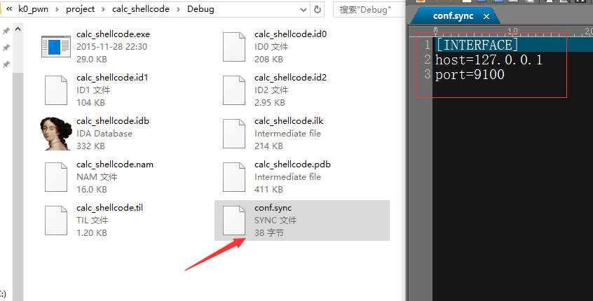
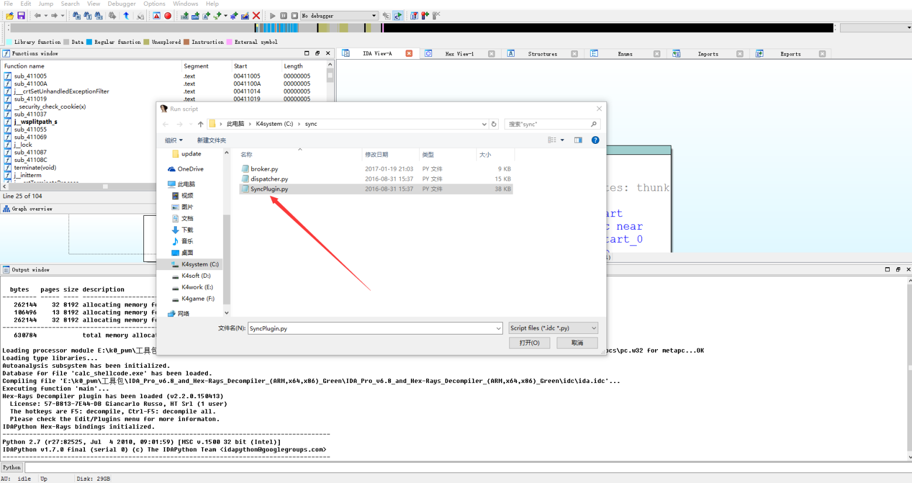
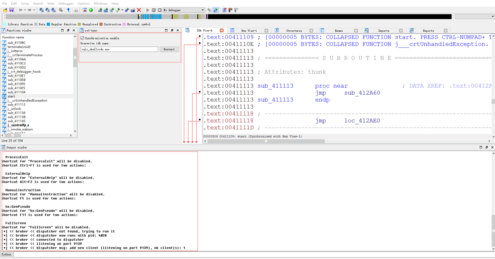
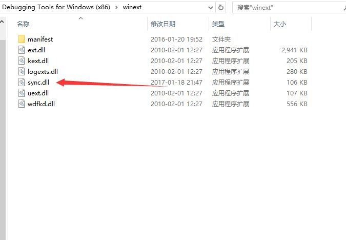
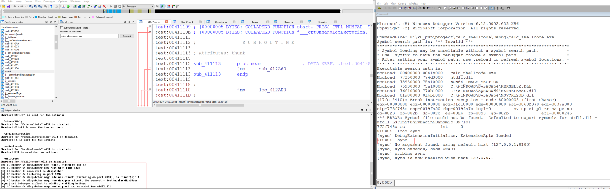
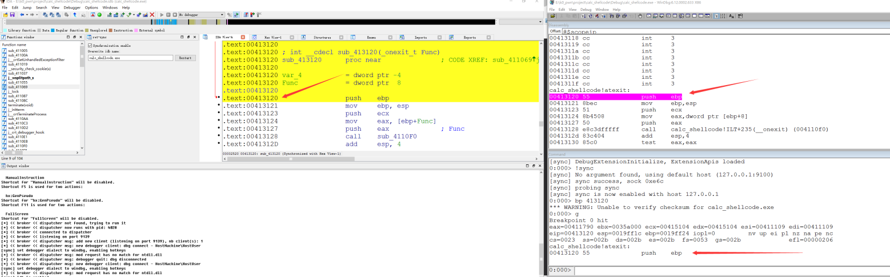
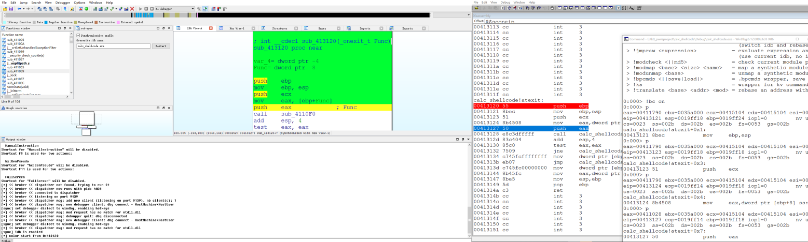

作者：k0shl 转载请注明出处 作者博客：http://whereisk0shl.top
原作者项目地址：https://github.com/bootleg/ret-sync
我的项目地址：https://github.com/k0keoyo/ret-sync-unset-hotkey
我的项目目前只支持win x86平台，目前的修改只是将IDA的F5功能复活了，在ret-sync中，会将IDA的一些快捷键替换成windbg的，因此会去掉一些好用的功能，比如F5插件。
ret-sync是一个bootleg做的一个非常好玩的工具，也非常的实用，他实现了一个我一直想实现的东西，就是IDA和windbg同步，在windbg进行动态调试的时候，同时可以看到IDA中代码的执行情况，也就是比如当前的eip会反馈到IDA中得到一个对应，同样，可以用IDA打开多个idb，比如一个exe和exe调用到的一些动态链接库dll，将这些一起进行动态调试。
同样，ret-sync现在也支持linux,x86_64等多种环境调试了。
在我的项目中，提供了一个sync.dll，原项目没有编译这个windbg的扩展。下面我来详细介绍一下这个工具的配置及使用过程。
首先需要在目标的idb文件夹下，也就是存放ida打开要调试内容的文件夹下，添加一个配置文件，这个文件显示连接的IP和端口号。

没有这个文件会显示"idb is disabled"。这个文件是不会默认创建的，需要手动创建，文件名其实只要以.sync结尾就好，这里就起名为conf.sync。
[INTERFACE]
host=127.0.0.1
port=9100
然后打开IDA，通过IDA file -> script file的方法，打开SyncPlugin.py文件，这里需要提一点，在IDA 6.9用的import是PyQT5，在这之前6.8用的是PySide，如果从原作者项目中下载的话，在extida文件夹下的那个SyncPlugin.py是IDA 6.9的，如果用的是6.8及之前的SyncPlugin.py保存在extida里面的另一个文件夹下。

同时要注意，broker和dispatch主要是处理和动态调试器通信的py文件，需要和SyncPlugin.py处于同一个文件夹，还有一点就是需要在环境变量中加上这个SyncPlugin.py所在文件的绝对路径。
这样检查了配置文件之后就能正常连接了。

现在dispatcher和broker检查完毕后就会等待动态调试器连接，这时候需要把sync.dll拷贝到windbg的winext文件夹下，sync.dll可以使用我项目中的，也可以用原作者项目中的，那个有个sln文件，需要在vs2013版本编译。

拷贝完后打开windbg，通过open excution或者attach的方法打开目标调试进程或者文件，然后使用命令加载sync扩展。
.load sync
加载后使用
!sync
连接ida

这样就可以成功连接了，之后就可以进行调试了，通过
!synchelp
可以显示所有命令，在我的项目中的f5在windbg里可以当作g使用，在ida里还是转换伪代码。其他还有很多特别实用的功能。

比如可以跟踪执行流程，这个也是比较好用的。
